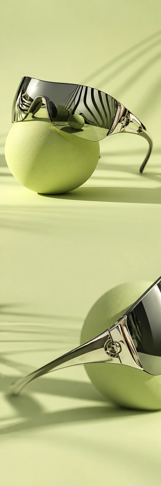

ORBIT EYEWEAR
AccessoiresCollectiedrop
SHIFT YOUR PERSPECTIVE
A NEW
POINT OF VIEW.
Ontdek de frames ORBIT EYEWEAR / VAN DICHTBIJ
Klein detail.
Grote verschuiving.
Sculpturale lijnen en een glanzend metalen frame. ORBIT maakt van een dagelijkse accessoire het middelpunt van je look.
01Chrome
02Smoky lens
03Bold shape
Look
again.
Dezelfde straat. Een ander gezicht.
Ontdek de frames